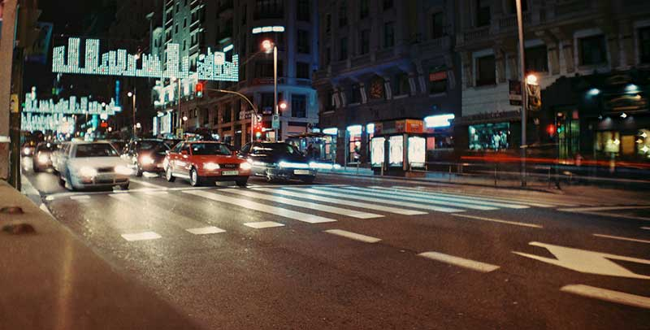

Rails Helper Faux Crop
Fork on GithubThis plugins resizes and positions the image inside a container to act as if it had been cropped. It finds the largest centered square area on the original image and fits it into the thumbnail wrapper. You can also pass crop coordinates as you would do with an image processor.
If you rather render the necessary markup from a jquery plugin, check JqueryFauxCrop

example A
example B
crop_x:40
crop_y:140
crop_size:130
crop_x:40
crop_y:140
crop_size:130
Basic Usage: Centered thumbnail
<%= faux_crop(
"example_image.jpg", # image path
800, # image width
406, # image height
200 # target size
) %>
Using Crop Coordinates
<%= faux_crop(
"example_image.jpg", # image path
800, # image width
406, # image height
200, # target size
40, # crop x offset
140, # crop y offset
130 # crop size
) %>
Limitations
- Tested on the good browsers and IE8+
- Meant for square thumbnails
- It's not responsive
- This plugin is a just a proof of concept.